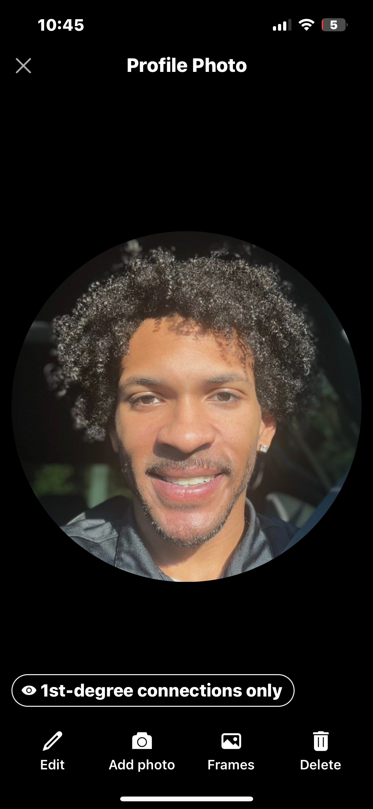

Team
The people behind QIRA
Independent researchers building at the frontier of language model architecture.
Bryan Leonard
Co-Founder / AI Researcher
Builds the groundwork that makes LOLM possible. Owns training infrastructure, experiment pipelines, and day to day model runs. From setting up multi GPU environments to debugging loss curves at 3 AM. Responsible for scaling experiments across all five model sizes.

Brandyn Leonard
Co-Founder / AI Researcher
The architect behind LOLM's design. Drives the big picture research direction: hybrid architecture design, data implementation strategy, and the surface latent separation thesis. Translates theoretical insight into model architecture and defines what QIRA builds next.
QIRA operates as a focused two person research lab. We believe meaningful AI breakthroughs come from depth of investigation, not size of team. All our work is published openly with code and weights.